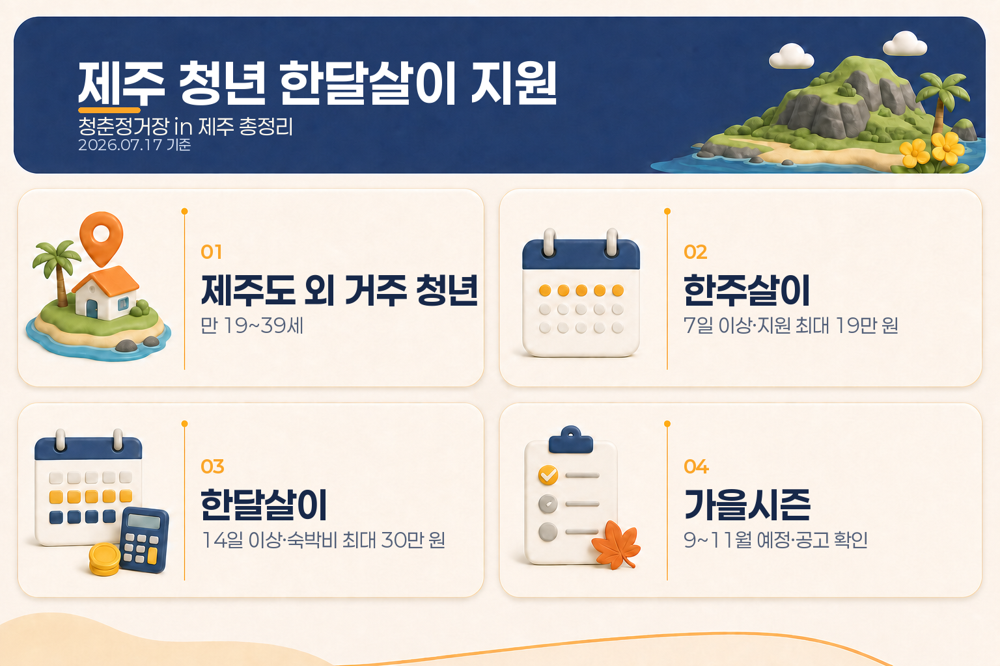

제주 청년 한달살이 지원금, 청춘정거장 in 제주 총정리
제주에서 일도 하고, 배우기도 하고, 잠시 살아보는 청년 런케이션 프로그램이 있습니다. 바로 청춘정거장 in 제주입니다.
2026년 여름시즌 모집은 6월 17일에 마감됐고, 가을시즌은 9~11월 운영 예정으로 안내돼 있습니다. 따라서 지금은 여름 참여자를 추가로 신청하는 시점이 아니라, 가을 모집 공고를 확인하면서 조건과 준비물을 챙겨둘 시기입니다.
| 구분 | 핵심 내용 |
|---|---|
| 대상 | 제주도 외 지역에 거주하는 만 19~39세 청년 |
| 한주살이 | 7일 이상 체류, 숙박비 14만 원 + 교육비 실비 최대 5만 원, 최대 19만 원 |
| 한달살이 | 14일 이상 체류, 숙박비 1박당 1만 원·최대 30만 원 + 교육비 실비 최대 10만 원 |
| 추가 조건 | 30일 이상 체류 시 교육비 5만 원 추가, 인정되는 읍·면 숙소와 OT·SNS 미션 필요 |
| 현재 상태 | 여름시즌 모집 마감, 가을시즌 운영 예정·별도 모집 공고 확인 |

청춘정거장 in 제주란?
청춘정거장 in 제주는 제주특별자치도와 제주관광공사가 운영하는 청년 런케이션 프로그램입니다. 런케이션은 일과 휴식을 결합한 형태로, 제주에 머무는 동안 교육·체험·지역 프로그램에 참여하고 제주 생활 콘텐츠를 기록하는 방식으로 진행됩니다.
단순히 숙박비를 일괄 지급하는 여행 지원사업이라기보다는, 정해진 기간 제주에 체류하면서 오리엔테이션과 프로그램에 참여하고, 이후 증빙을 제출해 숙박비와 교육비 일부를 사후 정산받는 구조로 이해하면 쉽습니다.
2026년 시즌 일정과 현재 모집 상태
제주 공식 안내 기준 2026년 운영기간은 5월부터 11월까지입니다.
- 봄시즌: 5~6월
- 여름시즌: 7~8월
- 가을시즌: 9~11월
여름시즌은 2026년 5월 27일부터 6월 17일까지 모집했고, 6월 18일 결과를 발표했습니다. 이 모집은 이미 마감됐습니다.
가을시즌은 9~11월 운영 예정으로 안내되고 있습니다. 다만 기준일인 2026년 7월 17일 현재 가을 신청이 열렸다고 단정할 수 있는 별도 공고는 확인되지 않았으므로, 제주 공식 모집 페이지의 다음 공지를 기준으로 신청기간과 인원을 확인해야 합니다.
한주살이·한달살이 지원금 구조
1. 한주살이: 7일 이상 체류
한주살이는 7일 이상 체류하는 유형입니다. 숙박비 14만 원에 교육비 실비 최대 5만 원을 더해 최대 19만 원까지 지원되는 구조입니다.
교육비는 정해진 금액을 무조건 받는 방식이 아니라 실제 지출과 인정 범위에 따라 정산되므로, 프로그램별 교육·체험비와 증빙 기준을 확인해야 합니다.
2. 한달살이: 14일 이상 체류
한달살이는 14일 이상 체류하는 유형입니다. 숙박비는 1박당 1만 원, 최대 30만 원이며 교육비는 실비 기준 최대 10만 원입니다.
또한 30일 이상 체류하면 교육비 지원에 5만 원이 추가됩니다. 그래서 안내 자료에 등장하는 한달살이 최대 45만 원은 다음처럼 이해하면 됩니다.
숙박비 최대 30만 원 + 교육비 최대 15만 원 = 최대 45만 원
여기서 중요한 점은 14일 이상 체류하면 바로 45만 원을 받는다는 뜻은 아니라는 것입니다. 14일 이상은 한달살이 유형에 신청할 수 있는 기준이고, 45만 원은 숙박비 상한과 30일 이상 체류에 따른 교육비 추가분까지 모두 반영한 최대치입니다. 실제 지급액은 인정 숙박일수, 실제 교육비, 제출 증빙에 따라 달라집니다.
신청 대상은 누구인가요?
기본 대상은 다음과 같습니다.
- 제주도 외 지역에 거주하는 만 19~39세 청년
- 프로그램에서 정한 최소 체류일을 지킬 수 있는 사람
- 제주 읍·면 지역의 인정 숙소를 이용할 수 있는 사람
- 오프라인 오리엔테이션에 참석할 수 있는 사람
- 제주살이 SNS 콘텐츠 업로드 등 참여 미션을 수행할 수 있는 사람
지원자가 모집인원을 넘으면 추첨으로 선정될 수 있습니다. 따라서 대상 연령에 해당한다고 해서 자동 선정되는 방식은 아니며, 시즌별 모집인원과 선발 방식도 공고에서 함께 확인해야 합니다.
연령은 프로그램 시작일 또는 오리엔테이션 날짜를 기준으로 판단한다고 안내돼 있습니다. 신청일에 나이가 맞는지뿐 아니라, 실제 프로그램 시작일에도 연령 조건을 충족하는지 살펴보는 것이 좋습니다.
숙소와 체류일에서 확인할 점
읍·면 지역 숙소가 기본
지원 대상 숙소는 제주 시내 동 지역 전체가 아니라, 사업에서 인정하는 읍·면 지역 숙소입니다. 제주에 머문다는 사실만으로 숙박비 지원이 적용되는 것은 아니므로 예약 전에 숙소 주소와 인정 여부를 확인해야 합니다.
체류일은 오리엔테이션·프로그램 시작일 기준
오리엔테이션 전에 제주에 먼저 도착하더라도, 지원 체류기간은 입도일부터 자동으로 계산되지 않고 OT 또는 프로그램 시작일 기준으로 산정된다고 안내돼 있습니다. 항공편과 숙소를 잡을 때 이 기준을 미리 반영해야 합니다.
지원금은 사후 정산
프로그램 참여와 체류를 마친 뒤 숙박·교육비 관련 증빙을 제출하고 정산받는 흐름입니다. 숙박 예약내역, 결제 영수증, 교육·체험 참여 확인 등 시즌 공고에서 요구하는 서류를 보관해두는 것이 안전합니다.
가을시즌을 준비하는 순서
여름시즌 모집이 끝난 지금은 다음 순서로 준비하면 됩니다.
- 제주 공식 청춘정거장 in제주(런케이션) 모집 페이지를 즐겨찾기합니다.
- 가을시즌 모집 공고가 올라오면 모집기간, 인원, OT 날짜, 지원 항목을 먼저 확인합니다.
- 읍·면 지역의 인정 숙소와 체류기간을 공고 기준에 맞춰 비교합니다.
- 숙소비·교육비를 먼저 부담하는 사후정산 방식인지 확인하고, 항공료·식비·교통비 등 별도 비용도 예산에 넣습니다.
- 선정 후에는 OT 참석, SNS 콘텐츠, 설문·교육 참여와 증빙 제출 일정을 캘린더에 기록합니다.
아직 가을 공고가 나오지 않은 상태라면, 환불이 어려운 숙소나 교통편을 먼저 확정하기보다 공고와 선정 결과를 확인한 뒤 움직이는 편이 안전합니다.
자주 묻는 질문
14일만 머물면 최대 45만 원인가요?
아닙니다. 14일 이상은 한달살이 유형의 신청 기준입니다. 숙박비는 1박당 1만 원, 교육비는 실비이며, 30일 이상 체류 시 교육비 5만 원이 추가되는 구조라 실제 금액은 체류일수와 교육비 지출에 따라 달라집니다.
제주도에 사는 청년도 신청할 수 있나요?
기본 대상은 제주도 외 지역 거주 청년입니다. 제주 거주자는 해당 시즌 공고의 대상 조건을 다시 확인해야 하며, 일반적인 도외청년 모집에는 포함되지 않습니다.
제주 시내 숙소를 이용해도 되나요?
지원 조건은 읍·면 지역 숙소 이용입니다. 원하는 숙소가 동 지역에 있다면 지원 대상에서 제외될 수 있으므로 주소와 인정 범위를 먼저 확인해야 합니다.
지원금은 미리 받나요?
사전 지급이 아니라 프로그램 참여 후 숙박·교육비 증빙을 제출해 사후 정산하는 방식으로 안내돼 있습니다.
가을시즌은 지금 신청할 수 있나요?
2026년 가을시즌은 9~11월 운영 예정으로 안내돼 있지만, 기준일 현재 별도 모집 공고의 신청기간이 확정된 것으로 보기는 어렵습니다. 제주 공식 모집 페이지에서 가을 공고가 게시되는지 확인해야 합니다.
한눈에 정리
청춘정거장 in 제주는 제주도 외 지역에 사는 만 19~39세 청년이 제주에서 배우고 체험하며 일정 기간 머물 수 있도록 돕는 런케이션 프로그램입니다.
- 한주살이: 7일 이상, 최대 19만 원
- 한달살이: 14일 이상 유형, 숙박비·교육비 합산 최대 45만 원
- 핵심 조건: 읍·면 숙소, OT 참석, SNS 콘텐츠, 최소 체류일, 사후 증빙
- 현재 상태: 여름시즌 모집 마감, 가을시즌 9~11월 운영 예정
‘최대’라는 숫자만 보기보다 어떤 숙소를 이용하는지, 실제 체류일이 어떻게 계산되는지, 교육비 증빙이 가능한지를 함께 확인하면 가을시즌 준비가 훨씬 수월합니다.
이 글은 2026년 7월 17일 공개된 제주특별자치도·제주관광공사 안내를 바탕으로 정리한 일반 정보입니다. 가을시즌의 모집기간, 인원, 지원 항목과 최종 정산 기준은 새 공고에 따라 달라질 수 있으므로 신청 전 공식 모집 페이지와 운영기관 안내를 다시 확인하세요.